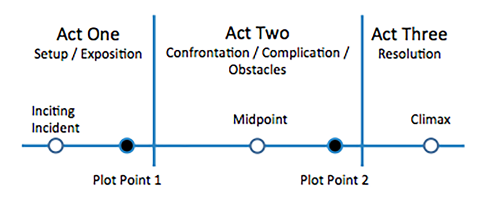

The arrogance
of the genius
(an oxymoron?)
An incoherent conversation about feelings, choices, and intelligence in relation to innovation
first of all
What is "innovation"?
Innovation is the introduction of ideas, products, processes and procedures useful to the world
Innovation relys on
- knowledge
- creativity
- power of observation
- focus
- commitment
- resiliency
- luck
- ...
idea
vs
execution
A misunderstanding
the three-acts structure
The first act
set up
establishes the main characters, their relationships and the world they live in
the "inciting incident" confronts the protagonists

the "plot point 1" changes protagonists' life forever

second act
confrontation
is where the protagonists attempt to resolve the new problems they have
the "midpoint"
the "all is lost" moment
the "plot point 2"
third act
resolution
with the new awareness of the protagonists, the third act is where the story reaches its most tense point
the "third-act twist"
the resolution
what happens with a single scene?
many good scenes have a three-acts structure, which in this case is called "three-beats structure"
and many directors respect a three-acts structure even for the single cut
comparision film-startup
| set up | start up | idea | |
| confrontation | product, market fit, etc. | execution | |
| resolution | exit |
startups have every day problems which they solve implementing a three-beats structure
idea | execution | resolution
wait a moment, what about the development of the smallest piece of code?
You know the answer: the pattern is the same
this means that
the contraposition between ideas and execution is a nonsense
let's go back to the innovation. Is creativity really required?
in 2003 Jack Dorsey, evan williams, biz stone and noah glass had an idea
a public service to enable users to send and read 140-character messages
in 2009 Travis Kalanick and Garrett Camp where trying to solve a problem with cabs which many other had tried to solve before them, failing
their solution was to start with a very specific niche: a black cars club
uber
John Pemberton was a Confederate Colonel and a pharmacist who became addicted to morphine during the Civil War
His medical solution was based on coca leaves and coca nuts, and accidentally his lab assistant mixed the two with carbonated water
coca-cola
why do people spend time and money developing products that possibly never see the light of day?
psychologists attribute it to an overextimation of their knowledge: a "cognitive bias"
at a certain point, the entrepreneurs will develop an "affective bias"
despite their stubborness, what are the feelings that move people?
do they depend on the stage of the startup?
passion
excitement
competitiveness
arrogance
humility
affection
sense of duty
what about intelligence?
are geniuses really arrogant?
but first
what is intelligence?
psychologists differentiate intelligence
into specific "modalities"
Logical–mathematical
Visual–spatial
Verbal–linguistic
Musical–rhythmic and harmonic
Bodily–kinesthetic
Interpersonal
...

let me tell you a joke
You are the CEO of your company.
Which is your solution?
hiring someone who can find the solution faster than you
let's talk about arrogance
The problem with the world is that the intelligent people are full of doubts, while the stupid ones are full of confidence.
Charles Bukowski
Francois Truffaut on Michelangelo Antonioni
“Antonioni is the only important director I have nothing good to say about. He bores me.”
Ingmar Berman on Orson Welles
“For me he’s just a hoax. It’s empty. It’s not interesting. It’s dead. Citizen Kane is a total bore.”
Orson Welles on Jean-Luc Godard
“His message is what he cares about these days, and, like most movie messages, it could be written on the head of a pin.”
Werner Herzog on Jean-Luc Godard
“Someone like Jean-Luc Godard is for me intellectual counterfeit money when compared to a good kung-fu film.”
historically, the most important discoveries were done by very young people.
The end
If you want to contact me,
please contact me.
I'll look forward to your questions,
but don't look forward to my answers.